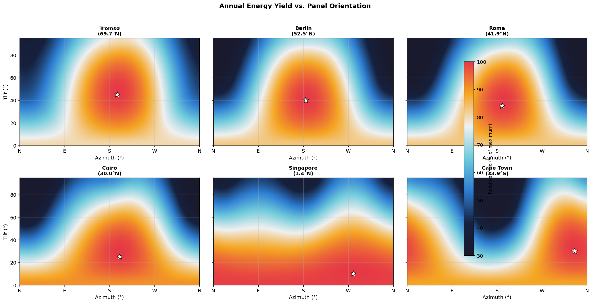
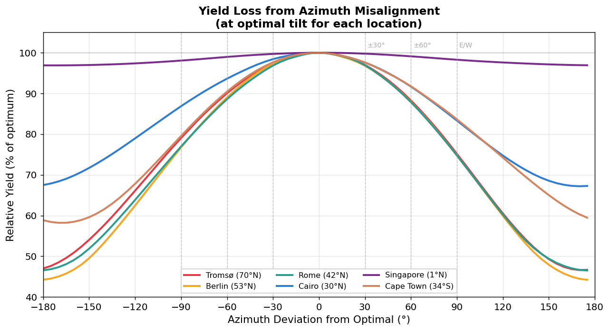
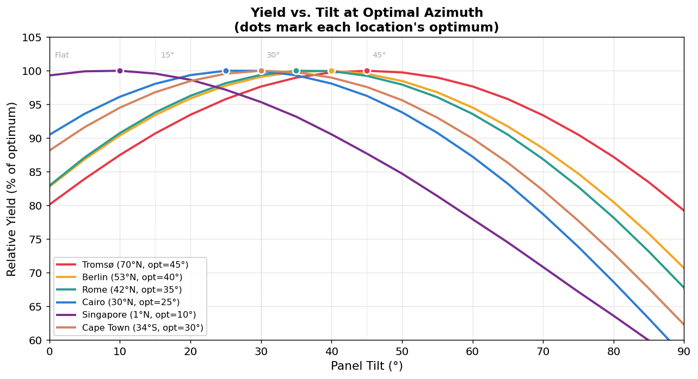
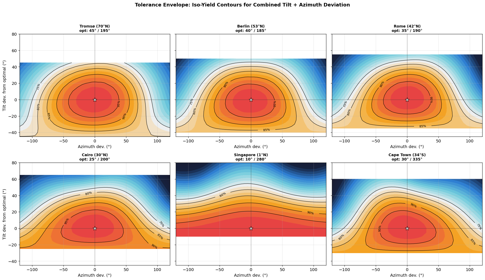
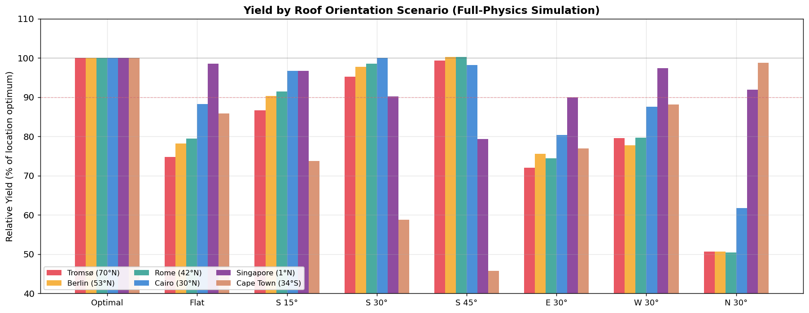
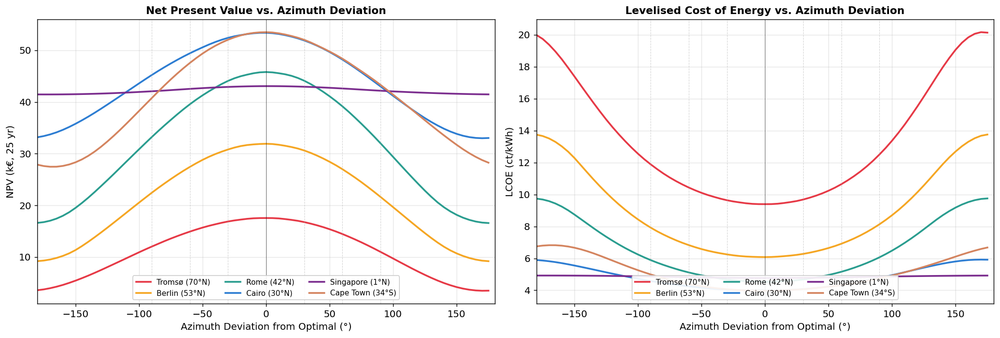
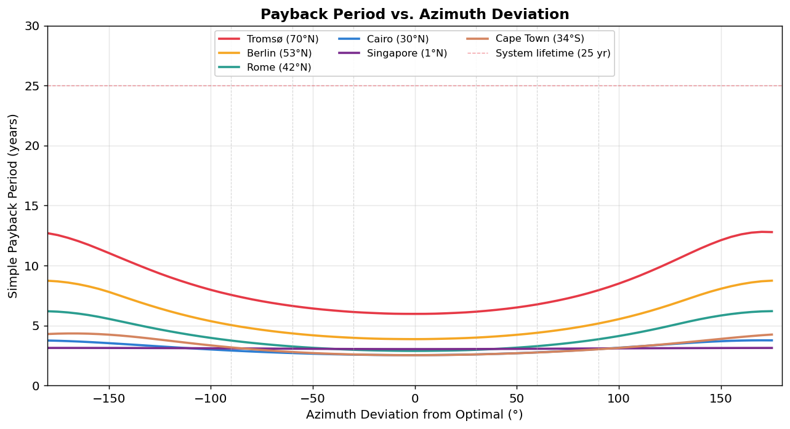
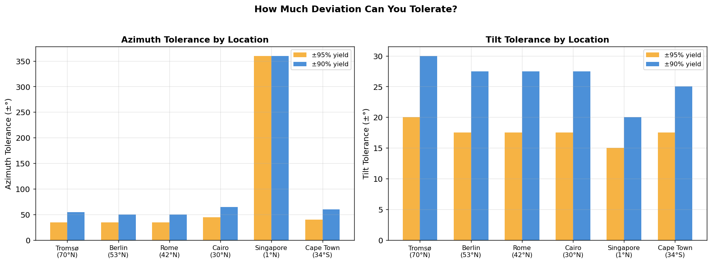

Locations & System Configuration
Six latitudes, one reference system — isolating the effect of orientation
We analyse six cities spanning from the subarctic to the mid-latitudes of the Southern Hemisphere, each representing a distinct climate and solar irradiance profile. All simulations use the same reference system: an 8 kWp array (20 × 400 W modern mono-Si modules) with a 96% efficiency inverter.
| City | Latitude | Climate | GHI (kWh/m²/yr) | Avg Temp (°C) |
|---|---|---|---|---|
| Tromsø, Norway | 69.6°N | Subarctic, long winters | 715 | 2.9 |
| Berlin, Germany | 52.5°N | Temperate, continental | 1,161 | 11.1 |
| Rome, Italy | 41.9°N | Mediterranean | 1,611 | 16.9 |
| Cairo, Egypt | 30.0°N | Arid, clear sky | 2,050 | 23.8 |
| Singapore | 1.3°N | Equatorial, tropical | 1,858 | 27.2 |
| Cape Town, South Africa | 33.9°S | Mediterranean (SH) | 1,938 | 17.5 |
Climate data comes from Open-Meteo historical satellite observations (ERA5/SARAH3, 2023). For each location, we sweep 1,368 orientations (19 tilts × 72 azimuths at 5° resolution) using a vectorised Hay-Davies sky model with PVWatts DC chain.
Optimal tilt / azimuth and resulting specific yield for each location. Note Singapore's westward optimal and Cape Town's north-northwestward optimal — driven by afternoon-heavy clear-sky patterns near the equator and the Southern Hemisphere's equator-facing direction being north.
Orientation Sensitivity Heatmaps
The full tilt × azimuth yield surface at each latitude
Each heatmap shows the relative yield (% of location-maximum) as a function of panel tilt (y-axis) and azimuth (x-axis). The optimal point is marked with a white star. Compass directions are labelled on the x-axis.

Yield Loss vs. Azimuth Deviation
"My roof faces 60° off optimal — how much yield do I lose?"
Fix tilt at each location's optimum and sweep azimuth away from the optimal direction. This directly answers the most common homeowner question.

| City | ±30° | ±60° | ±90° (E/W) | 180° (opposite) |
|---|---|---|---|---|
| Tromsø | 2.8% | 10.8% | 22.9% | 53.2% |
| Berlin | 3.0% | 11.5% | 24.3% | 55.8% |
| Rome | 3.1% | 11.8% | 24.1% | 53.5% |
| Cairo | 2.0% | 7.3% | 14.9% | 32.6% |
| Singapore | 0.3% | 0.9% | 1.8% | 3.1% |
| Cape Town | 2.4% | 8.9% | 18.4% | 40.8% |
Yield loss at key azimuth deviations from optimal (at optimal tilt). Values are averages of positive and negative deviations.
Yield Loss vs. Tilt Deviation
Does a flat roof, a 30° pitch, or a steep 45° pitch matter much?
Fix azimuth at the optimal direction and sweep tilt. This shows how the sensitivity to tilt errors changes with latitude.

| City | Opt. tilt | Flat (0°) | 15° | 30° | 45° | 60° |
|---|---|---|---|---|---|---|
| Tromsø | 45° | 80.1% | 90.7% | 97.7% | 100.0% | 97.7% |
| Berlin | 40° | 82.8% | 93.4% | 99.1% | 99.5% | 94.5% |
| Rome | 35° | 82.9% | 93.8% | 99.4% | 99.2% | 93.6% |
| Cairo | 25° | 90.5% | 98.1% | 100.0% | 96.3% | 87.2% |
| Singapore | 10° | 99.3% | 99.6% | 95.3% | 87.7% | 77.9% |
| Cape Town | 30° | 88.1% | 96.8% | 100.0% | 97.6% | 89.9% |
Relative yield at common roof pitches (at optimal azimuth). Tilt is generally more forgiving than azimuth.
Tolerance Envelope
How far can you deviate in both tilt and azimuth before losing more than X%?
The contour plots below show iso-yield lines as a function of simultaneous tilt and azimuth deviation from optimal. They answer the combined-error question that individual sensitivity curves cannot.

Detailed Roof Scenario Comparison
Full-physics simulation for 8 common roof orientations
We now run the full-physics simulation (Perez sky model, physical IAM, Faiman thermal model) for 8 common roof orientations at each location. This is more accurate than the grid sweep, which uses a simplified Hay-Davies + ASHRAE IAM approach.
| Scenario | Tilt | Azimuth | Description |
|---|---|---|---|
| Optimal | varies | varies | Best orientation per location |
| Flat | 0° | — | Flat roof, no tilt |
| South 15° | 15° | 180° | Low-slope south-facing |
| South 30° | 30° | 180° | Standard pitch south |
| South 45° | 45° | 180° | Steep south-facing |
| East 30° | 30° | 90° | East-facing gable |
| West 30° | 30° | 270° | West-facing gable |
| North 30° | 30° | 0° | Away from equator in NH; towards equator in SH |

Economic Impact of Suboptimal Orientation
How orientation losses translate to €, payback period, and NPV
Using the full-physics simulation results, we compute lifetime economic metrics for each roof scenario. Parameters: €1.10/Wp installed cost, €0.30/kWh grid price (2% escalation/yr), 4% discount rate, 0.5%/yr degradation, 25-year lifetime, 70% self-consumption.


Cross-Latitude Sensitivity
How does latitude govern orientation forgiveness?
We extract two key metrics for each location: the azimuth and tilt deviation ranges that keep yield within 90% and 95% of optimal.

| City | Latitude | Az ±90% | Az ±95% | Tilt ±90% | Tilt ±95% |
|---|---|---|---|---|---|
| Tromsø | 69.7°N | ±55° | ±35° | ±30° | ±20° |
| Berlin | 52.5°N | ±50° | ±35° | ±28° | ±18° |
| Rome | 41.9°N | ±50° | ±35° | ±28° | ±18° |
| Cairo | 30.0°N | ±65° | ±45° | ±28° | ±18° |
| Singapore | 1.4°N | ±360° | ±360° | ±20° | ±15° |
| Cape Town | 33.9°S | ±60° | ±40° | ±25° | ±18° |
Key Findings
The six locations sampled span 34°S to 70°N. In the Southern Hemisphere the pattern mirrors: replace "equator-ward" with "north" instead of "south" in every optimal azimuth. The underlying physics — and the magnitude of losses — are symmetric about the equator.
Optimal Orientations
- Tromsø (69.7°N): 45° tilt, 195° (S) → 788 kWh/kWp/yr
- Berlin (52.5°N): 40° tilt, 185° (S) → 1,217 kWh/kWp/yr
- Rome (41.9°N): 35° tilt, 190° (S) → 1,632 kWh/kWp/yr
- Cairo (30.0°N): 25° tilt, 200° (S) → 1,859 kWh/kWp/yr
- Singapore (1.4°N): 10° tilt, 280° (W) → 1,551 kWh/kWp/yr
- Cape Town (33.9°S): 30° tilt, 335° (NNW) → 1,863 kWh/kWp/yr
Azimuth Sensitivity
- Tromsø: East loses 27.9%, West loses 20.4%, anti-equator loses 49.3%
- Berlin: East loses 24.4%, West loses 22.2%, anti-equator loses 49.3%
- Rome: East loses 25.6%, West loses 20.3%, anti-equator loses 49.6%
- Cairo: East loses 19.7%, West loses 12.5%, anti-equator loses 38.3%
- Singapore: East loses 10.1%, West loses 2.6%, anti-equator loses 8.1%
- Cape Town: East loses 23.0%, West loses 11.9%, anti-equator (S) loses 40.8%
Economic Impact
- Tromsø: East costs €7,634 in lost NPV (payback 5.8 → 8.0 yr). Anti-equator costs €13,489.
- Berlin: East costs €10,348 in lost NPV (payback 3.7 → 4.9 yr). Anti-equator costs €20,907.
- Rome: East costs €14,463 in lost NPV (payback 2.8 → 3.7 yr). Anti-equator costs €27,995.
- Cairo: East costs €12,484 in lost NPV (payback 2.5 → 3.1 yr). Anti-equator costs €24,298.
- Singapore: East costs €5,237 in lost NPV (payback 3.0 → 3.4 yr). Anti-equator costs €4,196.
- Cape Town: East costs €14,657 in lost NPV (payback 2.5 → 3.2 yr). Anti-equator (S) costs €26,191.
Rules of Thumb
- ±30° azimuth deviation from optimal costs only 2–5% yield at most latitudes — most roofs are fine.
- ±90° off-optimal costs 10–20% at mid-latitudes in either hemisphere, but only ~5% near the equator.
- Tilt is more forgiving than azimuth — a ±15° tilt error typically costs <5%.
- Equatorial locations are nearly orientation-insensitive — Singapore loses <10% even facing away from the equator.
- High latitudes are azimuth-sensitive but tilt-tolerant — at Tromsø, the flat tilt curve means any common pitch is acceptable.
- The pattern is symmetric about the equator — Cape Town (34°S) mirrors Rome/Cairo: swap "south" for "north" and the same losses apply.
- The economic penalty amplifies yield loss — a 15% yield loss can mean 30%+ reduction in NPV due to fixed CAPEX.
Methodology Notes
Climate Data
PVGIS Typical Meteorological Year (TMY) synthesised from 2005–2023 satellite observations (SARAH3/ERA5). Represents long-term average conditions, not a single year.
Orientation Grid (§1–4)
Vectorised Hay-Davies sky diffuse model with ASHRAE IAM and PVWatts DC model. ~1–2% conservative vs. the full Perez chain but evaluates 1,300+ orientations in seconds.
Roof Scenarios (§5–6)
Full physics chain — Perez anisotropic sky, physical IAM (AR glass), Faiman cell temperature, PVWatts DC, PVWatts inverter (96% eff.), full DC+AC loss budget.
Economic Model
Simple CAPEX-only, no O&M, no battery, no financing. Self-consumption = 70%, export at €0.08/kWh. Values shown in euros for illustration; relative losses (%) apply regardless of currency or local tariff.
System
20 × 400 W = 8 kWp (modern mono-Si), single inverter. All results normalised to kWh/kWp for system-size independence.
Source Code
The full analysis is available as a Jupyter notebook in the Solarflower repository, using the open-source solar-app core physics engine.
Analysis generated with Solarflower — open-source solar yield simulation tools.
Want to run the same analysis for your specific location?
Try the Solar Advisor →